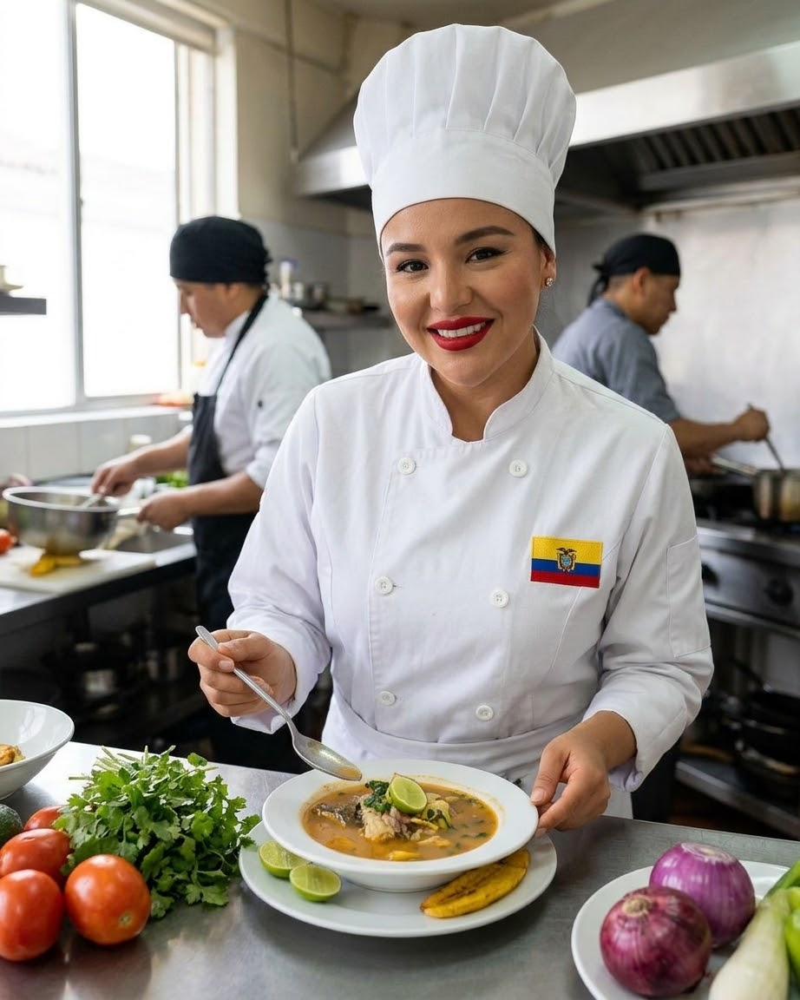

Hola, soy Mariela 👩🏽🍳
Operando desde su vibrante apartamento de Manhattan, Mariela lleva las ricas y auténticas tradiciones culinarias de Ecuador directamente a la ciudad de Nueva York.
Profundamente conectada con su herencia, se especializa en elaborar platos tradicionales de confort de la costa ecuatoriana, dominando platos icónicos como el ceviche de camarón y el reconfortante encebollado de pescado.
Ya sea marinando camarones en cítricos, cocinando a fuego lento albacora con yuca, o decorando sus tazones con cebolla colorada encurtida y crujientes chifles, Mariela combina recetas tradicionales de su hogar con la energía acelerada de la vida urbana.
“Cocino para tu familia como si fuera la mía.”— Mariela
Sus especialidades
Los sabores de la costa ecuatoriana, hechos a mano en Nueva York.
Ceviche de camarón
Camarones marinados en limón y naranja, con cebolla colorada, tomate y cilantro.
Encebollado de pescado
Albacora cocinada a fuego lento con yuca, coronada con curtido de cebolla.
Chifles caseros
Crujientes chips de plátano verde, el acompañante perfecto para cada plato.
¿Listo para probar la sazón de Mariela?
Abierto los domingos de 9 am a 8 pm — entregas en 108th Street, Manhattan.